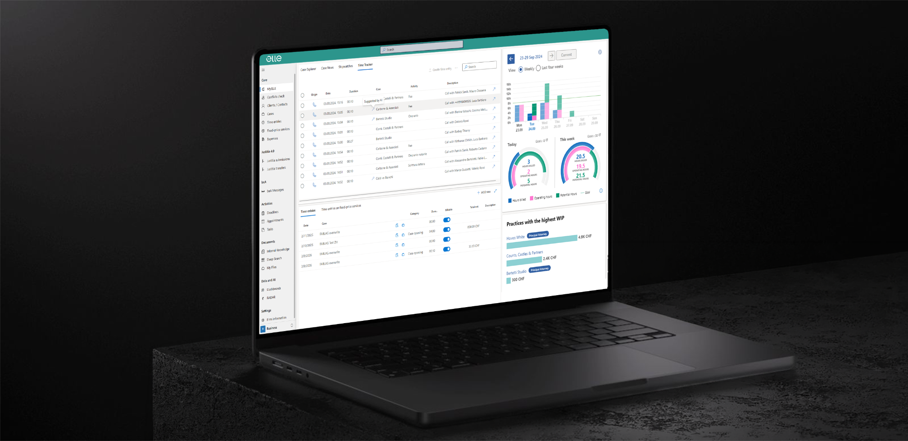

Define & plan
Own test planning, Test Plans, Test Suites and Test Cases using Azure DevOps Test Plans.
CASE STUDY 03 · FULL QA OWNERSHIP
End-to-end QA ownership for the launch of ELLE X, and the first step into Playwright automation.
At Logol AG, I currently own the entire QA function for the product. I define the testing approach and manage the lifecycle from internal validation through customer testing and release readiness.

THE PROJECT
I am contributing to the launch of the new ELLE X product. The product is evolving and its visual design will be renewed, so the screenshots in this case study represent the current testing environment rather than the final UI.
My responsibility covers all internal test phases and extends through customer testing, making QA a continuous part of the release lifecycle.
CURRENT PRODUCT
Own test planning, Test Plans, Test Suites and Test Cases using Azure DevOps Test Plans.
Perform functional, end-to-end and regression testing and manage defects through Azure DevOps.
Coordinate User Acceptance Testing and validation with business users before release.
Connect internal findings, customer feedback and release validation into one QA lifecycle.
My goal is to make quality increasingly repeatable, measurable and scalable, without losing the human perspective that good QA requires.
Visit Logol ↗